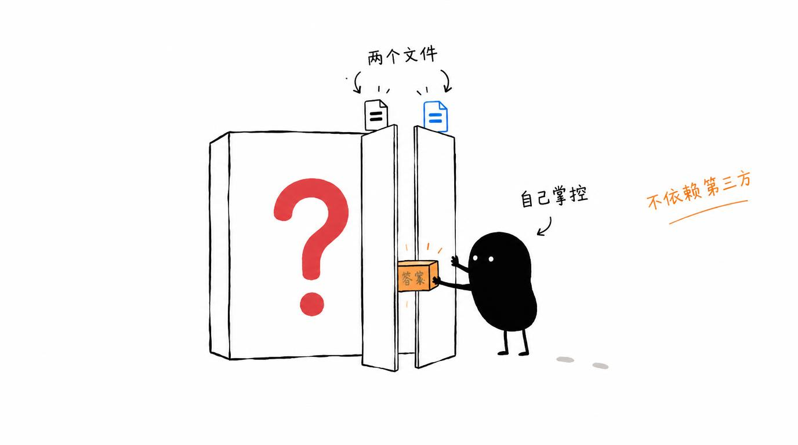

不用 Coze、不用 Dify，两个文件就给 WordPress 加上一个能真正干活的自适应智能客服，自己掌控、稍作配置即可上线。
第三方客服平台绑定重、数据不受自己掌控
很多智能客服方案要么绑定平台账号，要么拖家带口上一整套系统。这个项目反其道而行：两个简单文件，稍作配置就能给 WordPress（或其他网站）加一个自适应的智能客服，对话逻辑和数据都握在自己手里。
WordPress AI 智能客服 的六大能力
极简结构，不用搭平台、不用引一堆依赖，放上就能跑
Agentic 设计，能根据访客问题自适应回答，不是关键词机器人
不用 Coze、不用 Dify，无平台绑定，数据自主可控
为 WP 打造，同样适合挂到其他独立站点使用
需要一点点代码配置能力，改哪里、怎么改都清清楚楚
填好模型 API 配置即可投入使用
小黑手绘风格插图

从输入到产出，一步到位
快速开始
git clone https://github.com/liangdabiao/wordpress_kefu_ai_agent.git
将两个核心文件放到你的站点/WordPress 主题目录
填写大模型 API 密钥等配置项
刷新站点，客服入口即出现在页面上
现代化技术组合
关于 WordPress AI 智能客服 的常见疑问